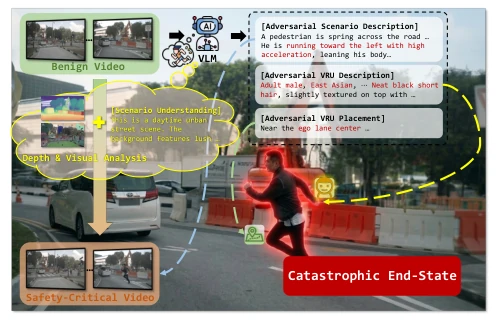
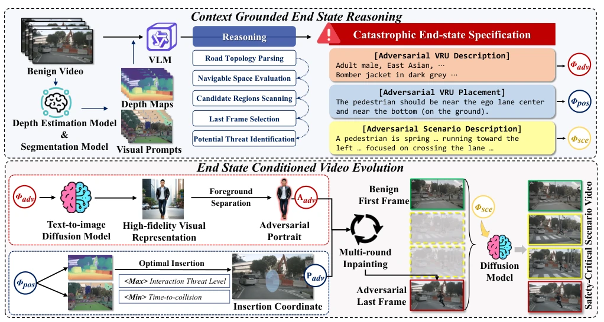
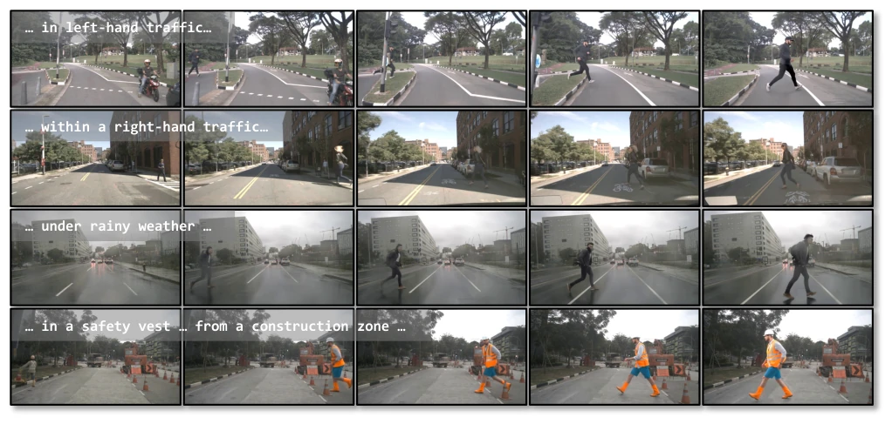
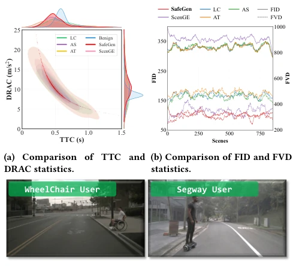
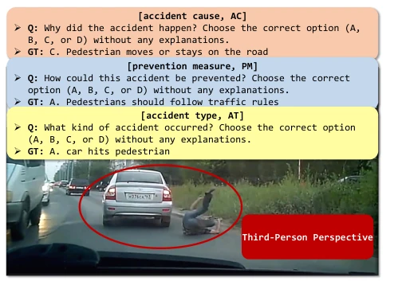
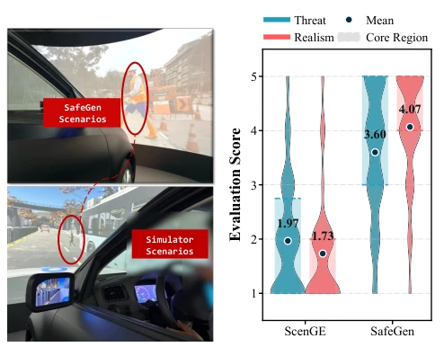

SafeGen's strategy of "starting with the end in mind" is quite interesting, directly generating videos with collision as the target, which is superior to those models that blindly predict the future. It uses diffusion models to bridge the gap between simulators and the real world; generated pedestrians not only look alike but also move smoothly, unlike the paper-thin figures in CARLA. However, relying on VLM to determine the "accident point" is somewhat of a gamble; if the VLM misjudges, the generated scene might not be that fatal. Although the JOS score rose by 24%, this is mainly the VLM contradicting itself; when facing complex road conditions, whether this data can generalize remains questionable. Overall, it conducted a high-intensity "stress test" for VLMAD, only the "referee" of this stress test is also a VLM, raising suspicions of self-talk.
VLMAD develops rapidly, but safety evaluation cannot keep up. Existing methods mostly rely on simulators (e.g., CARLA [8]), there exists a serious sim-to-real gap, textures are fake, physics are simple, [and it] cannot capture the non-linearity of real human interactions. Optimization-based methods (e.g., LC [6], AdvSim [22]) are constrained by preset action templates, making it difficult to reproduce sudden vehicle-pedestrian conflicts. Generative world models (e.g., ScenGE [18]), while focusing on vision, lack safety logic constraints. VLMAD needs to evaluate reasoning capabilities under long-tail risks, especially involving interactions with Vulnerable Road Users (VRU). Existing methods cannot generate high-risk scenarios that are both realistic and conform to physical laws, leading to evaluation data lacking representativeness and making it difficult to expose deep model defects.
方法Method
SafeGen 核心是 Goal-Conditioned Diffusion，分两阶段。第一阶段 Context Grounded End State Reasoning：利用 VLM 结合深度/分割先验，分析 benign 视频，定位最可能出事的“最后一帧”，并生成结构化事故规范（场景描述、行人画像、插入区域）。这相当于先定好“结局”，再反推过程。第二阶段 End State Conditioned Video Evolution：先用 T2I 扩散生成行人图像，经深度感知投影到 3D 场景，再通过边界条件视频扩散模型（FLF2V），从第一帧（正常驾驶）扩散到最后一帧（事故），确保中间帧物理合理、时间连贯。关键创新在于将场景生成转化为边界约束的状态演化问题，利用灾难性终点作为强监督信号，引导视频自然演化至高危状态。
SafeGen's core is Goal-Conditioned Diffusion, divided into two stages. The first stage Context Grounded End State Reasoning: Utilizing VLM combined with depth/segmentation priors to analyze benign videos, locate the "last frame" most likely to cause an accident, and generate structured accident specifications (scene description, pedestrian profile, insertion area). This is equivalent to setting the "ending" first, then deducing the process backwards. The second stage End State Conditioned Video Evolution: First generate pedestrian images using T2I diffusion, project to 3D scene via depth-aware projection, then through boundary-conditioned video diffusion model (FLF2V), diffuse from the first frame (normal driving) to the last frame (accident), ensuring intermediate frames are physically reasonable and temporally coherent. The key innovation lies in transforming scene generation into a boundary-constrained state evolution problem, utilizing catastrophic endpoints as strong supervision signals, guiding the video to naturally evolve to a high-risk state.

Figure 1: Given a benign driving video, SafeGen can synthe- size a physically plausible and temporally coherent safety- critical scenario video for VLMAD evaluation.

Figure 2: Overview of the proposed SafeGen framework for safety-critical scenario video generation.
Generated 850 scenes based on nuScenes, evaluated 3 VLMADs including Dolphins. Compared with baselines such as LC [6], AdvSim [22]. Metrics include JOS (VLM scoring), TTC/DRAC (physical threat), FID/FVD (visual quality). Results show SafeGen average JOS increased by 24.25%, significantly exposing model reasoning loopholes. Performance on real scenes improved by 15.9% after fine-tuning. Human evaluation considers threat level strong and realistic. Ablation experiments prove that using "last frame" as boundary constraint (FLF2V Last) is more effective than F2V or First constraints, capable of forcing intermediate dynamics to evolve towards collision. Visual metrics show generated quality is stable, diversity is rich, covering complex semantics such as rainy days, construction zones, etc.

Figure 3: Safety-critical scenario videos generated by SafeGen across construction, rain, and different traffic orientations.

Figure 4: Threat and realism analysis including kinematic metrics, visual metrics, and qualitative diversity examples.

Figure 6: Example frame from VRU-Accident, a dataset con- taining mixed viewpoints such as third-person collisions, illustrating the 3 most relevant QA categories selected.

Figure 7: Human evaluation, with simulator setup on the left and rating distributions on the right.